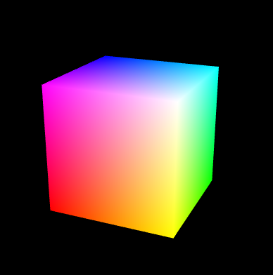

WebGL
Building Worlds In Your Web Browser
Presented by Vincent Moore
Presentation Goals
Introduction to WebGL
Hopefully spark your interest in WebGL
Presentation Structure
WebGL Overview
WebGL Frameworks
Further Study and Reading
So Who Am I?
My Background
- BA in journalism from the University of Alabama
- Sports writer for 10 years. Covered the NFL, NBA, Soccer and NASCAR
- Studied International Relations at the University of New South Wales in Sydney, Australia.
- Also a travel writer
- Astronomical artist
- Self-taught in web development. Built first web page in 1996 while a sophomore in college.
My Programming Background
- HTML, CSS, JavaScript
- PHP
- Python
- Open GL Shading Language (GLSL)
My Journey to WebGL
- Virtual Reality Modeling Language (VRML)
- HTML5 Canvas
- Always been interested in 3D Art, so I learned Blender
What is WebGL?
https://www.khronos.org/webgl/
WebGL is an API that enables drawing and displaying 3D graphics and interactive experiences in web browers.
WebGL is written with JavaScript and OpenGL ES Shading Language (GLSL)
Uses the HTML5 < canvas > tag to render apps.
WebGL is of course based on OpenGL, an API for rendering 2D and 3D computer graphics on smartphones, tablets, video games, etc. OpenGL is coded with C or C++.
WebGL Rendering Pipeline
WebGL Advantages
- Doesn't need a plugin
- It's written in JavaScript, which web browsers understand
- Shaders are programmable, so you are only limited by your skill and imagination
WebGL Disadvantages
- Some effects such as shadows, reflections or refractions can be difficult to render properly.
- The more complicated the effects, the more expensive rendering gets.
What WebGL isn't
- A game engine
- WebVR
So you wanna be a WebGL Developer?
Some basic concepts
3D Coordinate Space
Meshes, Polygons and Vertices

Materials, Textures and Lighting
Transforms
Matrices
Cameras, Viewports and Projections

GLSL
C-based language used to write graphics shaders.
Graphics shaders are programs that account for how light in a WebGL scene interacts with objects
Graphics shaders in WebGL are composed of two parts: vertex shaders and fragment shaders.
Vertex Shader
Describes traits (color, position, etc) of a vertex in a WebGL app.
precision highp float;
// Attributes
attribute vec3 position;
attribute vec2 uv;
// Uniforms
uniform mat4 worldViewProjection;
// Varying
varying vec2 vUV;
void main(void) {
gl_Position = worldViewProjection * vec4(position, 1.0);
vUV = uv;
}
Fragment (Pixel) Shader
Handles the per-pixel processing of lighting of WebGL objects.
precision highp float;
varying vec2 vUV;
uniform sampler2D textureSampler;
void main(void) {
gl_FragColor = texture2D(textureSampler, vUV);
}
3D Suites
Blender

http://www.blender.org
Blender is an open source 3D creation suite. It supports the entirety of the 3D pipeline—modeling, rigging, animation, simulation, rendering, compositing and motion tracking, even video editing and game creation.
3DS Max
https://www.autodesk.com/products/3ds-max/overview
Autodesk 3D suite that is really good for architectural visualization. Easier user interface. High pricetag
Maya
https://www.autodesk.com/products/maya/overview
Also from AutoDesk. A bit harder to learn at first, but better for rigging and animation. Also has a high pricetag.
Cinema 4D
https://www.maxon.net/en/products/cinema-4d/overview/
3D Creation Suite offering from Maxon.
Physically Based Rendering (PBR)
Physically based rendering (PBR) refers to the concept of using realistic shading/lighting models along with measured surface values to accurately represent real-world materials. PBR is more of a concept than a strict set of rules, and as such, the exact implementations of PBR systems tend to vary.
There are two main points to remember about PBR
Energy Conservation - an object can not reflect more light than it receives.
Everything has Fresnel.
Procedural Content Generation
In computing, procedural generation is a method of creating data algorithmically as opposed to manually.
http://learningthreejs.com/blog/2013/08/02/how-to-do-a-procedural-city-in-100lines/
Anatomy of a WebGL app
// Vertex shader program
var VSHADER_SOURCE =
'attribute vec4 a_Position;\n' +
'attribute vec4 a_Color;\n' +
'uniform mat4 u_MvpMatrix;\n' +
'varying vec4 v_Color;\n' +
'void main() {\n' +
' gl_Position = u_MvpMatrix * a_Position;\n' +
' v_Color = a_Color;\n' +
'}\n';
// Fragment shader program
var FSHADER_SOURCE =
'#ifdef GL_ES\n' +
'precision mediump float;\n' +
'#endif\n' +
'varying vec4 v_Color;\n' +
'void main() {\n' +
' gl_FragColor = v_Color;\n' +
'}\n';
function main() {
// Retrieve canvas element
var canvas = document.getElementById('webgl');
// Get the rendering context for WebGL
var gl = getWebGLContext(canvas);
if (!gl) {
console.log('Failed to get the rendering context for WebGL');
return;
}
// Initialize shaders
if (!initShaders(gl, VSHADER_SOURCE, FSHADER_SOURCE)) {
console.log('Failed to intialize shaders.');
return;
}
// Set the vertex coordinates and color
var n = initVertexBuffers(gl);
if (n < 0) {
console.log('Failed to set the vertex information');
return;
}
// Set clear color and enable hidden surface removal
gl.clearColor(0.0, 0.0, 0.0, 1.0);
gl.enable(gl.DEPTH_TEST);
// Get the storage location of u_MvpMatrix
var u_MvpMatrix = gl.getUniformLocation(gl.program, 'u_MvpMatrix');
if (!u_MvpMatrix) {
console.log('Failed to get the storage location of u_MvpMatrix');
return;
}
// Set the eye point and the viewing volume
var mvpMatrix = new Matrix4();
mvpMatrix.setPerspective(30, 1, 1, 100);
mvpMatrix.lookAt(3, 3, 7, 0, 0, 0, 0, 1, 0);
// Pass the model view projection matrix to u_MvpMatrix
gl.uniformMatrix4fv(u_MvpMatrix, false, mvpMatrix.elements);
// Clear color and depth buffer
gl.clear(gl.COLOR_BUFFER_BIT | gl.DEPTH_BUFFER_BIT);
// Draw the cube
gl.drawElements(gl.TRIANGLES, n, gl.UNSIGNED_BYTE, 0);
}
function initVertexBuffers(gl) {
// Create a cube
// v6----- v5
// /| /|
// v1------v0|
// | | | |
// | |v7---|-|v4
// |/ |/
// v2------v3
var verticesColors = new Float32Array([
// Vertex coordinates and color
1.0, 1.0, 1.0, 1.0, 1.0, 1.0, // v0 White
-1.0, 1.0, 1.0, 1.0, 0.0, 1.0, // v1 Magenta
-1.0, -1.0, 1.0, 1.0, 0.0, 0.0, // v2 Red
1.0, -1.0, 1.0, 1.0, 1.0, 0.0, // v3 Yellow
1.0, -1.0, -1.0, 0.0, 1.0, 0.0, // v4 Green
1.0, 1.0, -1.0, 0.0, 1.0, 1.0, // v5 Cyan
-1.0, 1.0, -1.0, 0.0, 0.0, 1.0, // v6 Blue
-1.0, -1.0, -1.0, 0.0, 0.0, 0.0 // v7 Black
]);
// Indices of the vertices
var indices = new Uint8Array([
0, 1, 2, 0, 2, 3, // front
0, 3, 4, 0, 4, 5, // right
0, 5, 6, 0, 6, 1, // up
1, 6, 7, 1, 7, 2, // left
7, 4, 3, 7, 3, 2, // down
4, 7, 6, 4, 6, 5 // back
]);
// Create a buffer object
var vertexColorBuffer = gl.createBuffer();
var indexBuffer = gl.createBuffer();
if (!vertexColorBuffer || !indexBuffer) {
return -1;
}
// Write the vertex coordinates and color to the buffer object
gl.bindBuffer(gl.ARRAY_BUFFER, vertexColorBuffer);
gl.bufferData(gl.ARRAY_BUFFER, verticesColors, gl.STATIC_DRAW);
var FSIZE = verticesColors.BYTES_PER_ELEMENT;
// Assign the buffer object to a_Position and enable the assignment
var a_Position = gl.getAttribLocation(gl.program, 'a_Position');
if(a_Position < 0) {
console.log('Failed to get the storage location of a_Position');
return -1;
}
gl.vertexAttribPointer(a_Position, 3, gl.FLOAT, false, FSIZE * 6, 0);
gl.enableVertexAttribArray(a_Position);
// Assign the buffer object to a_Color and enable the assignment
var a_Color = gl.getAttribLocation(gl.program, 'a_Color');
if(a_Color < 0) {
console.log('Failed to get the storage location of a_Color');
return -1;
}
gl.vertexAttribPointer(a_Color, 3, gl.FLOAT, false, FSIZE * 6, FSIZE * 3);
gl.enableVertexAttribArray(a_Color);
// Write the indices to the buffer object
gl.bindBuffer(gl.ELEMENT_ARRAY_BUFFER, indexBuffer);
gl.bufferData(gl.ELEMENT_ARRAY_BUFFER, indices, gl.STATIC_DRAW);
return indices.length;
}
Colored Cube

WebGL Frameworks
Three.js
https://threejs.org/
Three.js was first released by Ricardo Cabello (Mr. Doob) to GitHub in April 2010. The code was first developed in ActionScript, then in 2009 ported to JavaScript.
Babylon.js
https://www.babylonjs.com
Babylon.JS is complete framework for building games using HTML5, WebGL, Web Audio and WebVR. Created by David Cathue (Deltakosh), the Principal Program Manager for Windows and Devices group at Microsoft. Named this library for his love of Babylon 5.
What's so cool about these libraries?
- Abstracts utility, matrix and set-up files
- Tested across browsers
- Actively maintained
- Great plugins
- Active communities
- You can import files from Blender, 3DS Max, Maya and other 3D programs in a variety of formats.
But there are differences...
Three.js
Pros
- Most established 3D library
- Several books written about this library
- Fallback canvas rendering
- Some really cool extensions
Cons
- Backwards compatibility issues between versions
- Dcoumentation can be confusing
Presentation Three.js Example
Babylon.js
Pros
- Really helpful, but small community
- A true game engine
- Great documentation
- Optimized for mobile
Cons
- Young project
Presentation Babylon.js example
Other WebGL Tools
OSG.js
http://osgjs.org/OSGJS is a WebGL framework based on OpenSceneGraph concepts.
Game engines
Unity
http://www.unity3d.com
Most popular game engine. Can create a build in WebGL.
Unreal Engine
http://www.unity3d.com
Produces beautiful graphics. Can create a build in WebGL.
PlayCanvas
https://playcanvas.com/
Game engine written in JavaScript. Uses PBR shaders.
Additional tools
Blend4Web
https://www.blend4web.com/en/
Blend4Web is an open source framework for WebGL. A Blender add-on.
Clara.io
https://clara.io/
Online Modeler based on JavaScript and WebGL. Based on Three.js technology.
SculptGL
https://stephaneginier.com/sculptgl/
Online WebGL sculpting tool.
WebGL in Practice
WebGL has several practical uses including:
- HTML5 Gaming
- Architectural Visualization
- Educational visualization
- Medical visualization
- Products
Resources
Websites
WebGL Fundamentals - https://webglfundamentals.org/
WebGL2 Fundamentals - https://webgl2fundamentals.org/
Mozilla Developer Network - https://developer.mozilla.org/en-US/docs/Web/API/WebGL_API
Altered Qualia - http://alteredqualia.com/
Books
WebGL Programming Guide: Interactive 3D Graphics Programming with WebGL by Kouichi Matsuda and Rodger LeaProgramming 3D Applications with HTML5 and WebGL: 3D Animation and Visualization for Web Pages by Tony Parisi
WebGL Gems by Greg Sidelnikov WebGL Insights by Patrick Cozzi Learning Three.js: The JavaScript 3D Library for WebGL - Second Edition by Jos Dirksen Learning Babylon.js by Julian Chenard Babylon.JS Essentials by Julien Moreau-Mathis Graphics Shaders: Theory and Practice by Mike Bailey and Steven Cunningham
Vincent Moore
http://cosmiq.cloud
cosmiqwarrior@gmail.com